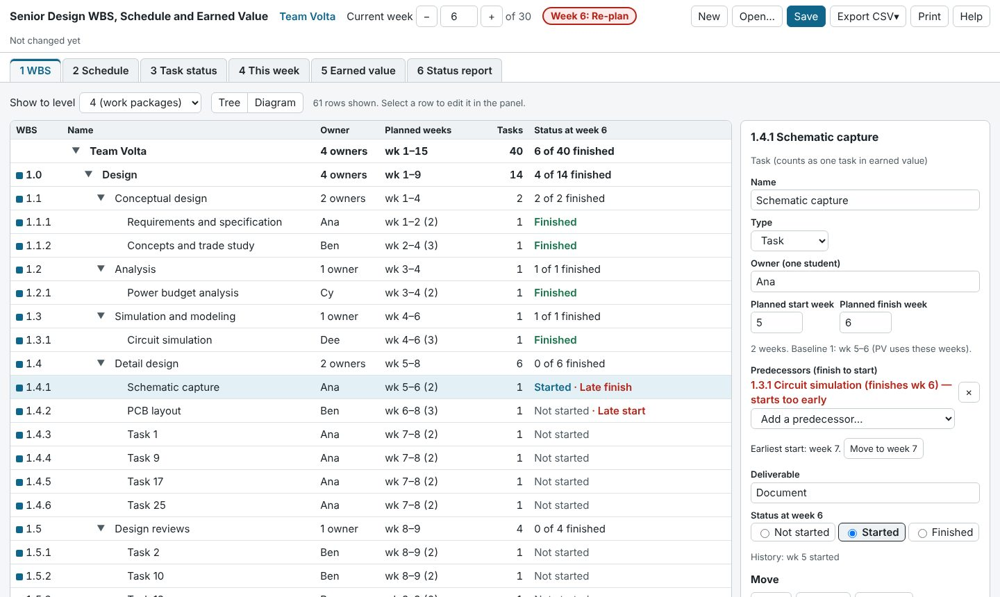
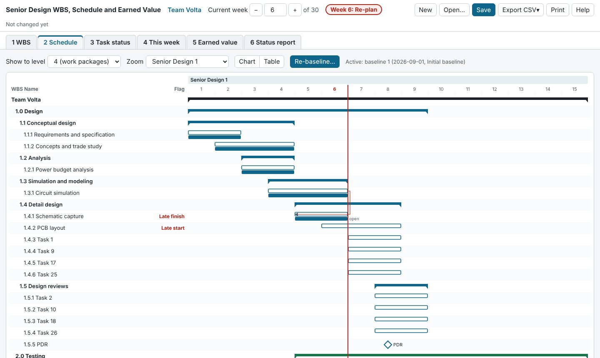
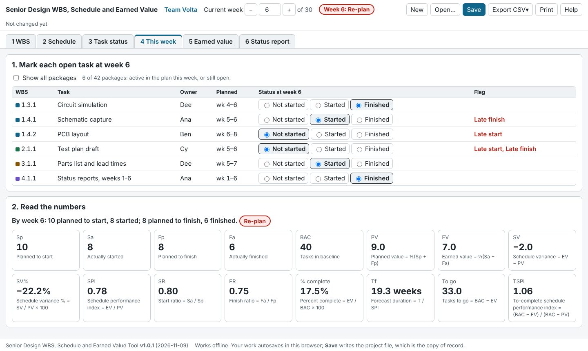
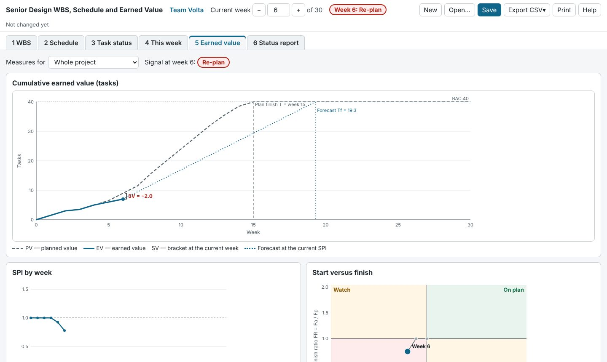

1. How the tool works
The tool has three linked parts. The WBS lists the work. Its lowest level, the work package, is one task. The tasks, with their planned weeks, make the schedule. Once the schedule is baselined, the tool measures earned value each week by counting tasks started and finished. No hours are logged.
| Tab | Use it to |
|---|---|
| 1 WBS | Build and edit the tree; see tasks by area and by student; fix the rule-check warnings. |
| 2 Schedule | See the Gantt chart; baseline or re-baseline; check predecessors. |
| 3 Task status | Compare tasks planned to start and finish with tasks actually started and finished, week by week. |
| 4 This week | The weekly update: mark each task, then read the numbers. |
| 5 Earned value | The PV and EV chart, forecast, SPI trend, start/finish quadrant, late tasks, and every measure by week. |
| 6 Status report | Print a one-page report for the weekly status report. |
The top bar holds the current week (with − and + buttons), the signal for that week, and the file buttons.
Step 1Set up the project (week 0)
Open the tool. A new project starts with the Senior Design template at week 0, the planning week. The top bar says Week 0: planning. Every measure reads not yet defined until week 1. That is expected.
- On 1 WBS, click the top row (the project).
- In the panel on the right, enter the project name and the team members, one per line.
- Leave the project length at 30 weeks (Senior Design 1 is weeks 1–15, Senior Design 2 is weeks 16–30) unless your instructor tells you otherwise.
- Click Save to write the project file. Keep it in your team's shared folder.
The template holds the four major areas and their sub-areas from the lecture:
- 1.0 Design: 1.1 Conceptual design, 1.2 Analysis, 1.3 Simulation and modeling, 1.4 Detail design, 1.5 Design reviews
- 2.0 Testing: 2.1 Test plan, 2.2 Testing, 2.3 Final test report
- 3.0 Manufacture: 3.1 Manufacturing plan, 3.2 Procurement, 3.3 Build to the plan
- 4.0 Project Management: 4.1 Reporting, 4.2 Schedule, WBS and earned value, 4.3 Customer contact
Step 2Build the WBS
Your team writes the work packages under the sub-areas. Everything is done on 1 WBS: select a row, then use the panel on the right.

Add a task (work package)
- Click a sub-area, for example 1.4 Detail design.
- Under Add under it, click + Task. It appears as 1.4.1, the next one as 1.4.2, and so on.
- Fill in the name, the owner (one student), the planned start and finish weeks and the deliverable. Each field saves when you press Enter or move to the next field.
Add more depth
Click + Sub-element to add a summary level, for example 1.4.1 PCB. Then select it and add tasks under it: 1.4.1.1, 1.4.1.2. There is no limit on depth. WBS numbers always come from each row's position and renumber by themselves.
Rearrange
- ↑ Up and ↓ Down reorder a row among its siblings.
- → Indent puts a row under the row above it. ← Outdent moves it up one level.
- Make it a summary element turns a task into a heading you can add rows under. Make it a work package does the reverse for an empty heading.
- Delete removes a row and everything under it.
- To add a major area (5.0 and so on), select the project row and click + Major area.
See the level you want
Show to level opens every branch down to that level: 2 major areas, 3 sub-areas, 4 work packages, or All. Click ▶ or ▼ to open or close one branch. Diagram draws the same rows as an org chart, like the lecture's WBS slide. The Schedule tab uses the same level, and printing and the WBS CSV export use it too.
Rule checks
Warnings at the bottom of the tab flag the following. Click a warning to jump to that row.
- A task with no owner, or with "Team" as the owner.
- A task longer than 2 weeks.
- A task with no deliverable.
- A major area with no tasks.
- A student who owns more than 1.5 times the team average.
- A task that starts before a predecessor finishes.
They are warnings, not blocks. Fix them before you baseline.
Step 3Schedule the tasks
- Weeks. Each task has a planned start and finish week. A 1-week task starts and finishes in the same week.
- Predecessors. In the task's panel, use Add a predecessor… to add tasks that must finish before this one can start (finish to start). The panel shows the earliest start. If the task starts too early it turns red, and Move to week N fixes it in one click.
- Milestones (PDR, CDR, final demo): click + Milestone. A milestone is a single week, drawn as a diamond.
- Lead time (a part order, a board fab): click + Lead time and give it the weeks it takes. It is drawn as a hatched bar.
Milestones and lead-time items are shown on the schedule but are not tasks, so they do not count in earned value.

On 2 Schedule, Zoom shows the whole project, one semester, or 8 weeks around today. Table gives the same rows as a printable table.
Step 4Baseline the schedule
When the team agrees the plan, click Baseline the schedule… on 2 Schedule (or in the project panel) and give a reason such as "Initial baseline". This freezes every task's planned weeks. PV (planned value) is computed from the baseline, so nothing is measured until you baseline.
Then press + in the top bar to move to week 1. The project has started.
Step 5The weekly routine (about 10 minutes)
- Set the week. Press + in the top bar to move to the new week.
- Mark each task. On 4 This week, set each listed task to Not started, Started or Finished. Only tasks active in the plan this week, or still open, are listed. Tick Show all packages to see everything.
- Read the numbers. The second half of the tab shows the four counts, every measure and the signal.
- Print the report from 6 Status report and paste it into your weekly status report.
- Save the project file.

Status is recorded for the current week. To correct an earlier week, set the top bar back to that week, change the status, then return to the current week.
6. Read the numbers
Earned value is counted in tasks by the 50/50 rule: a task earns half when it starts and the other half when it finishes. Every count is cumulative to the end of the current week.
| Measure | Meaning | How it is found |
|---|---|---|
| Sp, Fp | Tasks planned to start, planned to finish | From the baseline |
| Sa, Fa | Tasks actually started, actually finished | From the status you enter |
| BAC | Number of tasks in the WBS | |
| PV, EV | Planned value, earned value (in tasks) | PV = ½(Sp + Fp), EV = ½(Sa + Fa) |
| SV, SV% | Schedule variance: negative means behind | SV = EV − PV; SV% = SV / PV × 100 |
| SPI | Schedule performance index: below 1 means behind | EV / PV |
| SR, FR | Start ratio, finish ratio | SR = Sa / Sp; FR = Fa / Fp |
| % complete | Share of the project earned | EV / BAC × 100 |
| Tf | Forecast duration in weeks at the current pace | T / SPI (T = planned finish week) |
| TSPI | The SPI needed from now on to finish on time | (BAC − EV) / (BAC − PV) |
The signal
The signal comes from the start and finish ratios, like the lecture's quadrant:
- On plan SR and FR both at least 1.
- Watch One of them below 1.
- Re-plan Both below 1.
Early in the project, before any task is planned to finish, progress is judged on getting tasks started (SR alone), and the signal says (on starts).

Example: the lecture's week-6 team
40 tasks, planned finish week 15. By week 6, 10 tasks were planned to start and 8 to finish; 8 have started and 6 have finished. PV = ½(10 + 8) = 9 and EV = ½(8 + 6) = 7, so SV = −2 and SPI = 0.78. SR = 0.80 and FR = 0.75 are both below 1: Re-plan. At this pace the project takes 15 / 0.78 = 19.3 weeks. To finish on time the team needs TSPI = 33 / 31 = 1.06 from now on.
What to do about it
- Start ratio low: tasks are not getting started. Check owners and predecessors, and look at the late-start list.
- Finish ratio low: tasks start but drag on. Split big tasks, clear blockers, and agree what "finished" means.
- TSPI well above 1: the team must work faster than it has so far. Talk with your advisor about scope or schedule.
7. The status report
6 Status report is one printable page: the signal, the headline numbers, the task status line, the earned value chart, the late tasks, the tasks started or finished this week, and an Actions box. Type the team's actions in the box, then click Print or save as PDF. Choose Save as PDF in the print dialog and paste the PDF into your weekly status report.
Print in the top bar prints whichever tab is open. Use it on the WBS or Schedule tab, at the level you have chosen.
8. Changing the plan
The WBS is a living document. Change it as the project moves forward:
- New task: add it as usual. It counts in earned value straight away, using its planned weeks. No re-baseline is needed.
- Task no longer needed: delete it. It drops out of every count.
- Task slipped: change its planned weeks if you like, but PV still uses its baseline weeks, so the slip stays visible. A thin dashed line on the Gantt chart shows the new plan.
- The plan really changed, for example after CDR: Re-baseline… with a reason. Earlier baselines are kept, and PV uses the new one.
9. Saving and sharing
- Autosave
- Every change is saved in this browser at once. The top bar shows the time. Browser storage can be cleared, and it does not move to another computer.
- Save (the copy of record)
- Save (or Ctrl+S / ⌘+S) downloads the
project file (
.json), named for the project and the week. Save after every weekly update and keep the files in your team's shared folder. The top bar warns you when there are changes not yet saved to a file. - Open
- Open… loads a project file. Instructors and advisors use it to open a team's file. Files from older versions of the tool still open.
- New
- Starts again from the template. Save your current project first.
- Export CSV
- Three spreadsheets for Excel: the WBS at the chosen level, the status history, and the weekly earned value table.
10. Tips for a good WBS
- Keep tasks small and similar in size: 1 or 2 weeks. Every task counts the same in earned value, so a 6-week task distorts the numbers. Split long work into steps that each end in something you can show.
- One owner per task. "Team" is not an owner. Someone has to be responsible for each task.
- Name the deliverable as a thing you can hand over: "Schematic, reviewed", "Test plan v1", "Bill of materials".
- Spread the work. Check Tasks by student. Nobody should own far more than the average.
- Use predecessors for real dependencies only, such as simulation before layout or parts ordered before the build.
- Put long waits in as lead-time items, like board fabrication or part delivery, so the schedule is honest about them.
- Don't forget project management: weekly reports (4.1), this file (4.2), and customer meetings (4.3) are tasks too.
- Add milestones for PDR, CDR and the final demo, and plan backwards from them.
- Clear the rule-check warnings before you baseline.
11. Questions and fixes
- Every number says "not yet defined".
- You are at week 0, or the schedule is not baselined yet. Baseline it on 2 Schedule, then move to week 1.
- One measure says "not yet defined" and the others don't.
- It would divide by zero: SPI when nothing is planned yet, FR when nothing is planned to finish yet. It fills in as the plan moves on. TSPI says plan complete when every task was planned to be done.
- I can't add a row under a task.
- Tasks are the lowest level. Click Make it a summary element first, then add tasks under it.
- I can't see the tasks I just added.
- Set Show to level to 4 or All, or open the branch with ▶.
- A task shows "Late start" or "Late finish".
- Its baseline start (or finish) week has passed, and it has not started (or finished). Mark its status, or talk about why it is late.
- My work is gone after I changed computer or cleared the browser.
- Open your last saved project file with Open…. This is why you Save every week.
- Does it need the internet?
- No. Once the page is open it works offline, and you can save the tool's HTML file to your laptop. Nothing you type is sent anywhere.
- Keyboard
- Tab moves between controls. In the WBS tree, ↑ ↓ move between rows, → opens a branch, ← closes it or goes to the parent. When a tab name has focus, ← → move between the tabs.